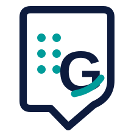

Güven Apps
Erişilebilir Android uygulamaları
Güven Apps, erişilebilir ve kullanımı kolay Android uygulamaları geliştiren bağımsız bir uygulama markasıdır.
Logo betimlemesi
Güven Apps logosu, koyu lacivert ve teal renklerde, yuvarlatılmış bir kalkan ve konuşma balonunu çağrıştıran stilize bir G simgesinden oluşur. Simgenin içindeki altı nokta Braille hücresini ve erişilebilirliği temsil eder.
Uygulamalar
Güven Phone
Güven Phone, görme engelli kullanıcıların telefon görüşmelerini, kişilerini, çağrı geçmişini ve arama kontrollerini daha erişilebilir biçimde kullanabilmesi için geliştirilen Android telefon uygulamasıdır.
Güven Phone hakkında ayrıntılı bilgi
Google Play'de görüntüle
Güven Phone Yardım Rehberi
Güven Braille Klavye
Güven Braille Klavye, dokunmatik ekranda Braille kullanarak yazmayı sağlayan, görme engelli kullanıcılar için geliştirilen Android klavye uygulamasıdır.
Neden Güven Apps?
Erişilebilirlik önceliği
Uygulamalar, ekran okuyucu kullanan görme engelli kullanıcıların ihtiyaçları temel alınarak geliştirilmektedir.
Gerçek kullanım deneyimi
Kararlar gerçek cihaz testleri, kullanıcı geri bildirimleri ve günlük kullanım sırasında karşılaşılan sorunlar doğrultusunda alınmaktadır.
Sade ve doğrudan kullanım
Temel işlemlerin karmaşık menüler arasında kaybolmadan, anlaşılır ve güvenilir biçimde yapılması amaçlanmaktadır.
Son gelişmeler
Güven Phone
Google Play'de sürüm 2.0.22
2.0.12'den bu yana gelen yenilikler 23 Ekim 2026'da bütün kullanıcılara açıldı: kişi formu ve kişi işlemleri, görüşme sırasında Bluetooth, hızlı arama, zil sesleri, arayan anonsu ayarları ve daha fazlası.
Güven Braille Klavye
Google Play'de kapalı test aşamasında
Braille ile yazma deneyimi, ekran okuyucu uyumu ve güvenilir metin girişi üzerinde geliştirme ve test çalışmaları sürmektedir.
Topluluk ve geri bildirim
Karşılaştığınız sorunları, erişilebilirlik önerilerinizi ve yeni özellik taleplerinizi bize iletebilirsiniz.
E-posta
Telegram grupları
Bize ve diğer kullanıcılara soru sorabileceğiniz, öneri ve deneyim paylaşabileceğiniz iki Telegram grubu var.
- Guven Apps Telegram grubuna katıl (Türkçe)
- Guven Apps Global Telegram grubuna katıl (İngilizce)
Uygulamanın içinden
Güven Phone'da Ayarlar ekranının en üstündeki Sorun bildir bölümünü açın. İsterseniz sorunu kısaca yazın.
Gönder, raporu e-posta gibi seçtiğiniz bir uygulamayla göndermenizi sağlar. E-postayı seçerseniz alıcıya guvenapps80@gmail.com yazın. Dosyaya kaydet raporu telefona kaydeder.
Rapor, uygulama ve cihaz bilgileriyle son olayların kısa kaydını içerir. Ad, telefon numarası ya da mesaj içermez.